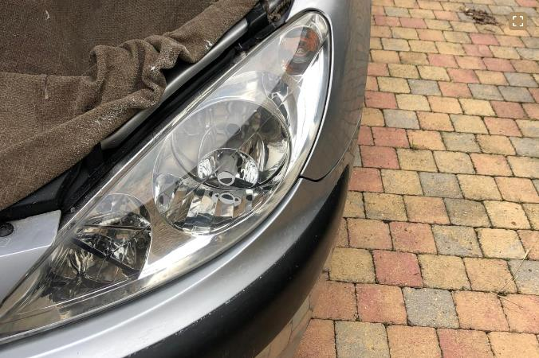
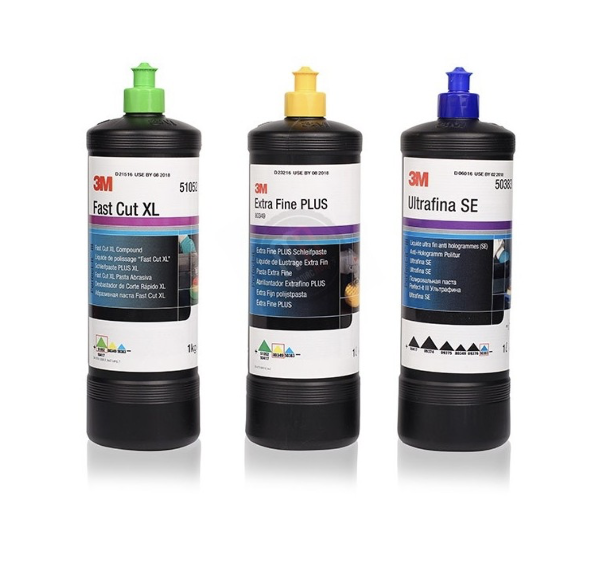

Rénovation de phares
50 €Vos phares sont jaunis, oxydés ou voilés ? Nous les restaurons à leur état d'origine pour une visibilité et une sécurité optimales sur la route.
Découvrir ce service →Votre expert local en rénovation de phares et lustrage de carrosserie.
Bienvenue chez Clean Optic, votre expert local en rénovation de phares et lustrage de carrosserie. Notre mission est de redonner à votre véhicule son éclat d'origine et de garantir une sécurité optimale sur la route.
Des prestations professionnelles adaptées à chaque véhicule
Vos phares sont jaunis, oxydés ou voilés ? Nous les restaurons à leur état d'origine pour une visibilité et une sécurité optimales sur la route.
Découvrir ce service →Rayures légères, peinture terne, vernis oxydé ? Notre lustrage professionnel redonne à votre carrosserie son brillant et sa profondeur d'origine.
Découvrir ce service →Un résultat qui parle de lui-même


Pourquoi nos clients nous font confiance
Forts de plusieurs années d'expérience dans l'entretien automobile, nous maîtrisons les techniques les plus avancées pour prendre soin de votre voiture.
Nous utilisons uniquement des produits de haute qualité pour assurer des résultats durables et satisfaisants.
Chaque véhicule est unique et nous adaptons nos services pour répondre aux besoins spécifiques de chacun de nos clients.
La satisfaction de nos clients est notre priorité. Nous nous engageons à fournir un service qui dépasse vos attentes.

Des bénéfices concrets pour vous et votre véhicule
Des phares clairs et efficaces augmentent votre visibilité et votre sécurité sur la route.
Un lustrage de carrosserie professionnel améliore l'apparence de votre véhicule, le rendant comme neuf.
Maintenir votre voiture en bon état augmente sa valeur et sa longévité.
Nos services peuvent éviter des coûts de remplacement ou de réparations plus importants à long terme.
Contactez-nous pour obtenir un devis gratuit et sans engagement.
Demander un devis gratuit